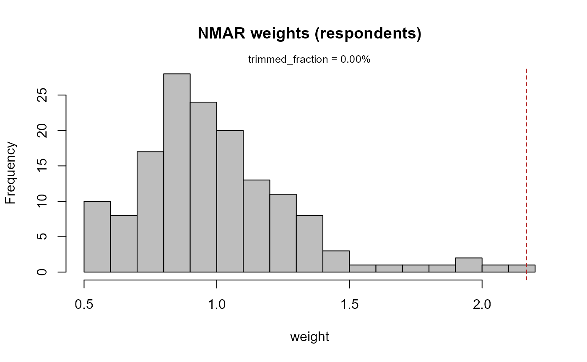
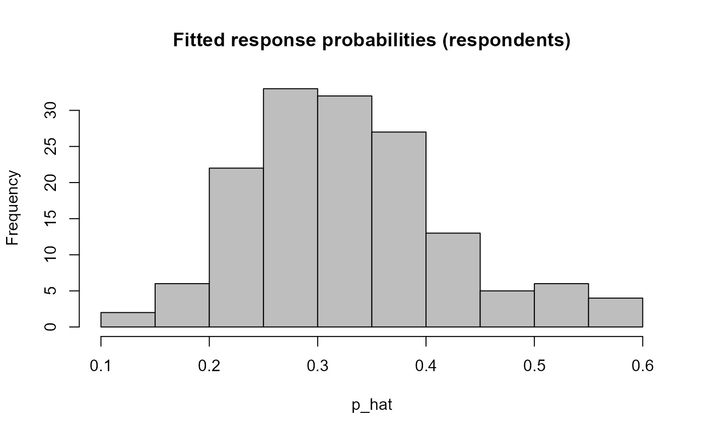

tutorial_empirical_likelihood.Rmd
knitr::opts_chunk$set(collapse = TRUE, comment = "#>")
set.seed(123)
library(nmar)##
## Attaching package: 'nmar'## The following object is masked from 'package:methods':
##
## elThis vignette demonstrates the empirical likelihood (EL) estimator
for Not Missing At Random (NMAR) data in the nmar package.
The method implements the estimator of Qin, Leung, and Shao (2002),
using empirical likelihood weights that satisfy estimating equations for
the response mechanism and (optionally) auxiliary moment constraints.
For full derivations and the analytic Jacobian/variance details, see the
companion article “Empirical Likelihood Theory for NMAR”.
Key features:
data.frame (IID) and
survey.design objects (design-based variance) via the same
nmar() API.summary(), confint(),
tidy(), glance(),
plot()/autoplot().list(outcome = ~ Y_miss, covariates_outcome = ~ X1 + X2, covariates_missingness = ~ Z1 + Z2).
X1 + X2) are
auxiliaries; you can supply their known population means via
auxiliary_means = c(X1 = ..., X2 = ...).covariates_missingness enter only the
response model (no auxiliary constraint). They do not need population
means.el_engine(...), e.g.,
el_engine(auxiliary_means = c(X1 = 0), variance_method = "delta", standardize = TRUE).nmar(formula = <list>, data = df_or_design, engine = el_engine(...)).summary(), confint(),
estimate(), weights(), fitted(),
and fit$diagnostics. # # Data-frame example (IID)We simulate an NMAR mechanism where the response probability depends on the unobserved outcome.
N <- 500
X <- rnorm(N)
Z <- rnorm(N)
Y <- 2 + 0.5 * X + Z
# NMAR response: depends on Y
p <- plogis(-1.0 + 0.4 * scale(Y)[, 1])
R <- runif(N) < p
dat <- data.frame(Y_miss = Y, X = X)
dat$Y_miss[!R] <- NA_real_
engine = el_engine(auxiliary_means = c(X = 0), variance_method = "delta", standardize = TRUE
)
# Fit EL estimator (delta variance)
fit <- nmar(
formula = Y_miss ~ X,
data = dat,
engine = engine,
response_predictors = NULL
)
summary(fit)
#> NMAR Model Summary
#> =================
#> Y_miss estimate: 1.878660
#> Std. Error: 0.251403
#> 95% CI: (1.385920, 2.371400)
#> Converged: TRUE
#> Variance method: delta
#> Variance notes: Calculation successful
#> Total units: 500
#> Respondents: 150
#> Call:
#> el.data.frame(data = list(Y_miss = c(1.11786933073888, 0.891212664159646,
#> 3.80613921314947, NA, NA, NA, NA, -0.703281687845231, 1.80669370524138,
#> 1.69795730569143, NA, 2.39605945532991, NA, NA, NA, 2.15865731648026,
#> NA, NA, NA, 1.57929542729365, NA, NA, NA, 1.35960921692889, 2.80212891143735,
#> NA, NA, NA, NA, NA, NA, NA, NA, 2.56705970945065, 4.35664175855018,
#> NA, NA, NA, NA, NA, NA, 1.42734158120811, NA, NA, NA, NA, NA,
#> 2.40616432108892, 4.82020921151267, NA, NA, 1.20352477670625,
#> NA, 2.93412586193379, NA, 1.29926457367785, NA, NA, NA, NA, 1.35597616084494,
#> NA, NA, NA, NA, 2.25284347209741, 2.75709417614119, 2.61323745245788,
#> NA, NA, 2.71574856878141, NA, NA, NA, NA, NA, NA, NA, NA, 1.95665454410672,
#> 1.68646622475295, NA, NA, 2.82084631808934, NA, NA, NA, NA, NA,
#> NA, NA, 2.73916647053989, 2.95990569451672, 1.40020153838893,
#> 3.18445247885661, NA, NA, NA, NA, 3.34670041138977, NA, NA, NA,
#> NA, NA, NA, 0.950804839910387, NA, NA, NA, NA, NA, 2.87864812880112,
#> NA, NA, NA, NA, 1.00416470425524, NA, NA, NA, NA, 2.60115756372936,
#> 2.0501440923189, NA, 2.61519085587644, NA, NA, NA, NA, 2.04377228379324,
#> NA, 2.55387582375012, 2.09898183989108, NA, NA, NA, NA, NA, NA,
#> NA, 2.13996801204931, NA, 1.87237791980185, 0.803433962923807,
#> 2.63390079211795, NA, NA, NA, NA, NA, NA, NA, NA, NA, NA, NA,
#> NA, 3.25753898833842, NA, NA, 2.85592602498151, NA, NA, NA, NA,
#> 2.5238460454669, NA, NA, NA, 1.37432731601133, NA, 2.38080858193111,
#> NA, NA, -0.509705732422634, NA, NA, 1.36463804272785, NA, NA,
#> NA, 1.09779127693569, NA, NA, 1.48682332646205, NA, NA, 2.05570205042387,
#> NA, NA, 3.02484385490614, NA, NA, NA, NA, NA, NA, NA, -0.206779498917775,
#> NA, NA, NA, 2.39044646262061, NA, NA, 1.89504260989221, NA, NA,
#> 2.72106709995112, NA, NA, 2.52260114533162, 1.65525394954568,
#> NA, 3.96292035847959, 2.6138199593044, NA, NA, NA, NA, NA, NA,
#> 0.824483645737372, NA, 2.28012279004063, 2.21156915846585, NA,
#> NA, 2.47856957059369, NA, NA, NA, NA, NA, NA, NA, 2.11280512925553,
#> 2.08688897443196, NA, 2.31729093705924, NA, 5.1309570301535,
#> NA, NA, NA, 4.64122656058171, NA, 4.04234999745836, 2.61737355745743,
#> NA, NA, NA, NA, NA, 1.83532361930806, NA, NA, -0.0945024421938705,
#> NA, NA, NA, NA, 0.957997817964329, NA, 3.74164973943895, 3.21000319930318,
#> NA, 1.48371748178133, 3.53244144341469, NA, NA, 2.79961679406569,
#> -0.31541094028096, NA, NA, NA, NA, NA, 1.73326532062576, NA,
#> NA, NA, NA, NA, 1.47402195702891, NA, 0.862217908331818, NA,
#> NA, 2.97858678451513, NA, 3.45938059228624, NA, NA, 2.85217857199687,
#> 3.3217910851728, NA, NA, NA, NA, NA, 2.38593285326074, NA, NA,
#> 2.30969424894168, NA, NA, NA, 2.86049298042027, NA, 0.813105616867448,
#> NA, NA, NA, NA, 1.75301192367766, NA, 1.92070181117748, NA, NA,
#> NA, NA, NA, NA, 1.74998065871254, NA, 0.463863532273996, NA,
#> NA, 3.56310159045139, NA, NA, NA, NA, 1.25776749613549, -0.433086245437266,
#> NA, NA, NA, NA, 5.16436168812071, NA, NA, 2.62380091406307, 1.09736268565487,
#> NA, NA, NA, NA, NA, NA, 2.80281557409945, NA, NA, 1.56342022346128,
#> 0.746865545869773, 1.63256409316893, NA, 4.90935028061355, NA,
#> NA, NA, NA, NA, 4.44812952784634, NA, NA, NA, NA, NA, NA, NA,
#> NA, 3.73884576217742, 3.65598048714365, NA, NA, 3.23927020207819,
#> NA, NA, 1.12312094637029, NA, NA, NA, 3.14664240010495, NA, NA,
#> 1.01757125140048, NA, NA, 1.48321822259141, NA, NA, NA, NA, 1.85397346769852,
#> NA, NA, NA, NA, NA, 1.98221955228511, NA, NA, NA, 2.65104578204186,
#> NA, NA, NA, NA, NA, 2.42754869874855, 0.158668381543694, NA,
#> 1.77503399570692, 3.39919173186142, NA, NA, 3.31573077572703,
#> NA, NA, NA, NA, NA, NA, 3.10323864957989, NA, 5.30478208792561,
#> NA, NA, NA, 2.15287532022513, NA, 1.99858380750331, NA, 1.66953601017944,
#> NA, 0.673001636356519, NA, NA, 1.86740951654826, 0.644034864532564,
#> 1.05547165741333, 1.2196824883296, NA, NA, 4.44833210080624,
#> NA, NA, NA, NA, 2.37380018172917, NA, NA, NA, NA, 2.06795628226048,
#> NA, NA, 3.22015335613371, NA, NA, 1.85139103819851, NA, NA, 0.52197723029947,
#> 1.19100406093598, NA, 1.98143399234759, 3.04244605206696, NA,
#> NA, NA, NA, NA, NA, 1.91680187242138, NA, NA, 4.31528733630821,
#> NA, NA, NA, NA, 1.61994509200149, 2.3752997316521, NA, NA, NA,
#> NA, NA, NA, NA, NA, NA, NA, NA, NA, 2.02688817935388), X = c(-0.560475646552213,
#> -0.23017748948328, 1.55870831414912, 0.070508391424576, 0.129287735160946,
#> 1.71506498688328, 0.460916205989202, -1.26506123460653, -0.686852851893526,
#> -0.445661970099958, 1.22408179743946, 0.359813827057364, 0.400771450594052,
#> 0.11068271594512, -0.555841134754075, 1.78691313680308, 0.497850478229239,
#> -1.96661715662964, 0.701355901563686, -0.472791407727934, -1.06782370598685,
#> -0.217974914658295, -1.02600444830724, -0.72889122929114, -0.625039267849257,
#> -1.68669331074241, 0.837787044494525, 0.153373117836515, -1.13813693701195,
#> 1.25381492106993, 0.426464221476814, -0.295071482992271, 0.895125661045022,
#> 0.878133487533042, 0.821581081637487, 0.688640254100091, 0.553917653537589,
#> -0.0619117105767217, -0.305962663739917, -0.380471001012383,
#> -0.694706978920513, -0.207917278019599, -1.26539635156826, 2.16895596533851,
#> 1.20796199830499, -1.12310858320335, -0.402884835299076, -0.466655353623219,
#> 0.779965118336318, -0.0833690664718293, 0.253318513994755, -0.028546755348703,
#> -0.0428704572913161, 1.36860228401446, -0.225770985659268, 1.51647060442954,
#> -1.54875280423022, 0.584613749636069, 0.123854243844614, 0.215941568743973,
#> 0.379639482759882, -0.502323453109302, -0.33320738366942, -1.01857538310709,
#> -1.07179122647558, 0.303528641404258, 0.448209778629426, 0.0530042267305041,
#> 0.922267467879738, 2.05008468562714, -0.491031166056535, -2.30916887564081,
#> 1.00573852446226, -0.709200762582393, -0.688008616467358, 1.0255713696967,
#> -0.284773007051009, -1.22071771225454, 0.18130347974915, -0.138891362439045,
#> 0.00576418589988693, 0.38528040112633, -0.370660031792409, 0.644376548518833,
#> -0.220486561818751, 0.331781963915697, 1.09683901314935, 0.435181490833803,
#> -0.325931585531227, 1.14880761845109, 0.993503855962119, 0.54839695950807,
#> 0.238731735111441, -0.627906076039371, 1.36065244853001, -0.600259587147127,
#> 2.18733299301658, 1.53261062618519, -0.235700359100477, -1.02642090030678,
#> -0.710406563699301, 0.25688370915653, -0.246691878462374, -0.347542599397733,
#> -0.951618567265016, -0.0450277248089203, -0.784904469457076,
#> -1.66794193658814, -0.380226520287762, 0.918996609060766, -0.575346962608392,
#> 0.607964322225033, -1.61788270828916, -0.0555619655245394, 0.519407203943462,
#> 0.301153362166714, 0.105676194148943, -0.640706008305376, -0.849704346033582,
#> -1.02412879060491, 0.117646597100126, -0.947474614184802, -0.490557443700668,
#> -0.256092192198247, 1.84386200523221, -0.651949901695459, 0.235386572284857,
#> 0.0779608495637108, -0.961856634130129, -0.0713080861235987,
#> 1.44455085842335, 0.451504053079215, 0.0412329219929399, -0.422496832339625,
#> -2.05324722154052, 1.13133721341418, -1.46064007092482, 0.739947510877334,
#> 1.90910356921748, -1.4438931609718, 0.701784335374711, -0.262197489402468,
#> -1.57214415914549, -1.51466765378175, -1.60153617357459, -0.530906522170303,
#> -1.4617555849959, 0.687916772975828, 2.10010894052567, -1.28703047603518,
#> 0.787738847475178, 0.76904224100091, 0.332202578950118, -1.00837660827701,
#> -0.119452606630659, -0.280395335170247, 0.56298953322048, -0.372438756103829,
#> 0.976973386685621, -0.374580857767014, 1.05271146557933, -1.04917700666607,
#> -1.26015524475811, 3.2410399349424, -0.416857588160432, 0.298227591540715,
#> 0.636569674033849, -0.483780625708744, 0.516862044313609, 0.368964527385086,
#> -0.215380507641693, 0.0652930335253153, -0.034067253738464, 2.12845189901618,
#> -0.741336096272828, -1.09599626707466, 0.0377883991710788, 0.310480749443137,
#> 0.436523478910183, -0.458365332711106, -1.06332613397119, 1.26318517608949,
#> -0.349650387953555, -0.865512862653374, -0.236279568941097, -0.197175894348552,
#> 1.10992028971364, 0.0847372921971965, 0.754053785184521, -0.499292017172261,
#> 0.214445309581601, -0.324685911490835, 0.0945835281735714, -0.895363357977542,
#> -1.31080153332797, 1.99721338474797, 0.600708823672418, -1.25127136162494,
#> -0.611165916680421, -1.18548008459731, 2.19881034888372, 1.31241297643351,
#> -0.265145056696353, 0.54319405923209, -0.41433994791886, -0.476246894615578,
#> -0.788602837850243, -0.594617267459511, 1.65090746733669, -0.0540281250854405,
#> 0.119245236427584, 0.243687429599092, 1.23247587848534, -0.51606383094478,
#> -0.992507150392037, 1.67569693240319, -0.441163216905286, -0.723065969939874,
#> -1.23627311888329, -1.2847157223178, -0.573973479297987, 0.617985817166529,
#> 1.10984813892972, 0.707588353835588, -0.363657297095253, 0.0597499373846007,
#> -0.70459646368007, -0.71721816157401, 0.88465049897692, -1.01559257860354,
#> 1.95529396549246, -0.0903195939658516, 0.214538826629216, -0.738527704739573,
#> -0.57438868976327, -1.31701613230524, -0.182925388372727, 0.418982404924464,
#> 0.32430434416138, -0.781536487054751, -0.788621970854002, -0.502198718342861,
#> 1.49606066984635, -1.13730362066574, -0.179051594380198, 1.90236182167893,
#> -0.100974885328808, -1.35984070382139, -0.664769435274062, 0.485459978904878,
#> -0.375602871669773, -0.561876363549783, -0.343917234128459, 0.0904966471392212,
#> 1.59850877114583, -0.088565112138884, 1.08079949615152, 0.630754115650567,
#> -0.113639895506141, -1.5329020028906, -0.52111731755252, -0.489870453138474,
#> 0.0471544327615272, 1.30019867766682, 2.29307897383109, 1.54758105898377,
#> -0.133150964328944, -1.75652739555764, -0.388779864071743, 0.0892072230732945,
#> 0.845013004067436, 0.962527968484271, 0.684309429416465, -1.39527434979947,
#> 0.849643045633355, -0.446557216427222, 0.174802700161256, 0.0745511771737346,
#> 0.428166764970505, 0.0246749828261399, -1.66747509758566, 0.736495964773442,
#> 0.386026568349676, -0.265651625278222, 0.118144511046681, 0.134038645368463,
#> 0.221019468561002, 1.64084616597749, -0.219050378933476, 0.168065383884658,
#> 1.16838387306909, 1.05418102337692, 1.14526311038036, -0.577468001059557,
#> 2.00248273029283, 0.066700870930183, 1.86685184470686, -1.35090268603071,
#> 0.0209835863542375, 1.24991457096922, -0.715242187222796, -0.752688968217742,
#> -0.938538703606894, -1.05251327933874, -0.437159533180399, 0.331179172958982,
#> -2.01421049792072, 0.211980433372292, 1.23667504641657, 2.03757401824044,
#> 1.30117599220059, 0.756774763795962, -1.72673039911433, -0.601506708006782,
#> -0.352046456582617, 0.703523902756894, -0.105671334003774, -1.25864862806017,
#> 1.68443570809411, 0.911391291795963, 0.237430272491026, 1.21810861032581,
#> -1.33877428723497, 0.6608202977898, -0.522912376313422, 0.683745521850712,
#> -0.0608219546600742, 0.632960713031451, 1.33551761505939, 0.00729009031689879,
#> 1.01755863695209, -1.18843403514798, -0.721604440436015, 1.51921771138818,
#> 0.377387973023929, -2.05222282043373, -1.36403745208238, -0.200781015589121,
#> 0.865779404334488, -0.101883255715222, 0.624187472020653, 0.959005377787825,
#> 1.67105482886294, 0.0560167332749619, -0.051981906180899, -1.75323735914227,
#> 0.0993275940878275, -0.571850057895563, -0.974009582804091, -0.17990623104754,
#> 1.01494317274366, -1.99274848868858, -0.427279287205429, 0.116637283582706,
#> -0.893207570054953, 0.333902942499225, 0.411429920615731, -0.0330361592759917,
#> -2.46589819376003, 2.57145814586664, -0.205299257468199, 0.65119328158767,
#> 0.273766491036548, 1.02467323481835, 0.817659446374088, -0.209793171228509,
#> 0.378167772208507, -0.945408831123893, 0.856923010899318, -0.461038338884354,
#> 2.41677335378821, -1.65104889568819, -0.463987242966015, 0.825379862759242,
#> 0.510132546878663, -0.589481038515, -0.996780742207522, 0.144475704710697,
#> -0.0143074131669134, -1.79028123726406, 0.034551067133851, 0.190230315692457,
#> 0.174726396981842, -1.05501704260268, 0.476133278302629, 1.37857013695924,
#> 0.456236403179813, -1.13558847037434, -0.435645469691905, 0.346103619553607,
#> -0.647045631318269, -2.15764633501528, 0.884250820028209, -0.829477611624518,
#> -0.573560270768283, 1.50390060900454, -0.774144929605405, 0.845731540189296,
#> -1.26068287881878, -0.354542403073978, -0.0735560191364783, -1.16865142442436,
#> -0.634748264908909, -0.0288415529283144, 0.67069596873393, -1.65054654342511,
#> -0.349754239211268, 0.756406438545484, -0.538809159977592, 0.227291921672942,
#> 0.492228570064431, 0.267835015331683, 0.653257679471382, -0.12270866097738,
#> -0.41367651359212, -2.64314895202898, -0.092941018479472, 0.430284696359987,
#> 0.53539884086815, -0.555278351313252, 1.77950290977515, 0.286424419628825,
#> 0.126315858458886, 1.27226677946852, -0.718466221319259, -0.450338623924712,
#> 2.39745248004976, 0.011129187220888, 1.63356842140831, -1.43850664491452,
#> -0.190516802042901, 0.378423903636832, 0.300038545205798, -1.00563625951084,
#> 0.0192592746253708, -1.07742065311198, 0.712703325244282, 1.08477508986065,
#> -2.22498769648741, 1.23569346230014, -1.24104449680849, 0.454769268982633,
#> 0.659902638142608, -0.199889828101433, -0.645113956859792, 0.16532102124205,
#> 0.438818700714454, 0.883302819948705, -2.05233698390195, -1.63637926805902,
#> 1.43040234118818, 1.04662884711155, 0.435288948907682, 0.71517840711106,
#> 0.917174917641003, -2.66092279846568, 1.11027709663882, -0.484987596562325,
#> 0.230616830631202, -0.295157800883577, 0.871964954078744, -0.348472448955611,
#> 0.518503765888248, -0.390684978638979, -1.09278720910151, 1.21001051044026,
#> 0.740900011274274, 1.72426223915645, 0.0651539325793032, 1.12500274582817,
#> 1.97541905401908, -0.281482115038967, -1.32295111275522, -0.239351567138116,
#> -0.214041239985383, 0.15168050450932, 1.71230497731928, -0.326143892505348,
#> 0.373004655804915, -0.227684064895531, 0.0204507085250325, 0.314057663506262,
#> 1.32821469603699, 0.121318377490778, 0.712842320031113, 0.778860029783535,
#> 0.914773270855634, -0.574394552184383, 1.62688121419468, -0.380956739294013,
#> -0.105784167649752, 1.40405026771417, 1.29408390614558, -1.08999187241124,
#> -0.873071000417463, -1.35807905937061, 0.181847192619832, 0.164840867918466,
#> 0.364114687355063, 0.552157714218558)), formula = Y_miss ~ X,
#> response_predictors = NULL, auxiliary_means = c(X = 0), standardize = TRUE,
#> trim_cap = Inf, control = list(), on_failure = "return",
#> variance_method = "delta", variance_jacobian = "auto", solver_jacobian = "auto",
#> variance_pseudoinverse = FALSE, bootstrap_reps = 500, suppress_warnings = FALSE,
#> family = list(name = "logit", linkinv = function (eta)
#> stats::plogis(eta), mu.eta = function (eta)
#> {
#> p <- stats::plogis(eta)
#> p * (1 - p)
#> }, d2mu.deta2 = function (eta)
#> {
#> p <- stats::plogis(eta)
#> p * (1 - p) * (1 - 2 * p)
#> }, score_eta = function (eta, delta)
#> {
#> if (missing(delta))
#> delta <- 1
#> delta <- validate_delta(delta)
#> p <- stats::plogis(eta)
#> delta - p
#> }))
#>
#> Response-model coefficients:
#> Estimate Std. Error z value Pr(>|z|)
#> (Intercept) -1.5706942 0.5001079 -3.140711 0.001685384
#> Y_miss 0.3667545 0.2793335 1.312963 0.189195444
confint(fit)
#> 2.5 % 97.5 %
#> Y_miss 1.38592 2.3714Probit family (optional):
engine = el_engine(auxiliary_means = c(X = 0), family = "probit", variance_method = "delta", standardize = TRUE)
fit_probit <- nmar(
formula = Y_miss ~ X,
engine = engine,
data = dat,
response_predictors = NULL
)
summary(fit_probit)
#> NMAR Model Summary
#> =================
#> Y_miss estimate: 1.880128
#> Std. Error: 0.248300
#> 95% CI: (1.393469, 2.366787)
#> Converged: TRUE
#> Variance method: delta
#> Variance notes: Calculation successful
#> Total units: 500
#> Respondents: 150
#> Call:
#> el.data.frame(data = list(Y_miss = c(1.11786933073888, 0.891212664159646,
#> 3.80613921314947, NA, NA, NA, NA, -0.703281687845231, 1.80669370524138,
#> 1.69795730569143, NA, 2.39605945532991, NA, NA, NA, 2.15865731648026,
#> NA, NA, NA, 1.57929542729365, NA, NA, NA, 1.35960921692889, 2.80212891143735,
#> NA, NA, NA, NA, NA, NA, NA, NA, 2.56705970945065, 4.35664175855018,
#> NA, NA, NA, NA, NA, NA, 1.42734158120811, NA, NA, NA, NA, NA,
#> 2.40616432108892, 4.82020921151267, NA, NA, 1.20352477670625,
#> NA, 2.93412586193379, NA, 1.29926457367785, NA, NA, NA, NA, 1.35597616084494,
#> NA, NA, NA, NA, 2.25284347209741, 2.75709417614119, 2.61323745245788,
#> NA, NA, 2.71574856878141, NA, NA, NA, NA, NA, NA, NA, NA, 1.95665454410672,
#> 1.68646622475295, NA, NA, 2.82084631808934, NA, NA, NA, NA, NA,
#> NA, NA, 2.73916647053989, 2.95990569451672, 1.40020153838893,
#> 3.18445247885661, NA, NA, NA, NA, 3.34670041138977, NA, NA, NA,
#> NA, NA, NA, 0.950804839910387, NA, NA, NA, NA, NA, 2.87864812880112,
#> NA, NA, NA, NA, 1.00416470425524, NA, NA, NA, NA, 2.60115756372936,
#> 2.0501440923189, NA, 2.61519085587644, NA, NA, NA, NA, 2.04377228379324,
#> NA, 2.55387582375012, 2.09898183989108, NA, NA, NA, NA, NA, NA,
#> NA, 2.13996801204931, NA, 1.87237791980185, 0.803433962923807,
#> 2.63390079211795, NA, NA, NA, NA, NA, NA, NA, NA, NA, NA, NA,
#> NA, 3.25753898833842, NA, NA, 2.85592602498151, NA, NA, NA, NA,
#> 2.5238460454669, NA, NA, NA, 1.37432731601133, NA, 2.38080858193111,
#> NA, NA, -0.509705732422634, NA, NA, 1.36463804272785, NA, NA,
#> NA, 1.09779127693569, NA, NA, 1.48682332646205, NA, NA, 2.05570205042387,
#> NA, NA, 3.02484385490614, NA, NA, NA, NA, NA, NA, NA, -0.206779498917775,
#> NA, NA, NA, 2.39044646262061, NA, NA, 1.89504260989221, NA, NA,
#> 2.72106709995112, NA, NA, 2.52260114533162, 1.65525394954568,
#> NA, 3.96292035847959, 2.6138199593044, NA, NA, NA, NA, NA, NA,
#> 0.824483645737372, NA, 2.28012279004063, 2.21156915846585, NA,
#> NA, 2.47856957059369, NA, NA, NA, NA, NA, NA, NA, 2.11280512925553,
#> 2.08688897443196, NA, 2.31729093705924, NA, 5.1309570301535,
#> NA, NA, NA, 4.64122656058171, NA, 4.04234999745836, 2.61737355745743,
#> NA, NA, NA, NA, NA, 1.83532361930806, NA, NA, -0.0945024421938705,
#> NA, NA, NA, NA, 0.957997817964329, NA, 3.74164973943895, 3.21000319930318,
#> NA, 1.48371748178133, 3.53244144341469, NA, NA, 2.79961679406569,
#> -0.31541094028096, NA, NA, NA, NA, NA, 1.73326532062576, NA,
#> NA, NA, NA, NA, 1.47402195702891, NA, 0.862217908331818, NA,
#> NA, 2.97858678451513, NA, 3.45938059228624, NA, NA, 2.85217857199687,
#> 3.3217910851728, NA, NA, NA, NA, NA, 2.38593285326074, NA, NA,
#> 2.30969424894168, NA, NA, NA, 2.86049298042027, NA, 0.813105616867448,
#> NA, NA, NA, NA, 1.75301192367766, NA, 1.92070181117748, NA, NA,
#> NA, NA, NA, NA, 1.74998065871254, NA, 0.463863532273996, NA,
#> NA, 3.56310159045139, NA, NA, NA, NA, 1.25776749613549, -0.433086245437266,
#> NA, NA, NA, NA, 5.16436168812071, NA, NA, 2.62380091406307, 1.09736268565487,
#> NA, NA, NA, NA, NA, NA, 2.80281557409945, NA, NA, 1.56342022346128,
#> 0.746865545869773, 1.63256409316893, NA, 4.90935028061355, NA,
#> NA, NA, NA, NA, 4.44812952784634, NA, NA, NA, NA, NA, NA, NA,
#> NA, 3.73884576217742, 3.65598048714365, NA, NA, 3.23927020207819,
#> NA, NA, 1.12312094637029, NA, NA, NA, 3.14664240010495, NA, NA,
#> 1.01757125140048, NA, NA, 1.48321822259141, NA, NA, NA, NA, 1.85397346769852,
#> NA, NA, NA, NA, NA, 1.98221955228511, NA, NA, NA, 2.65104578204186,
#> NA, NA, NA, NA, NA, 2.42754869874855, 0.158668381543694, NA,
#> 1.77503399570692, 3.39919173186142, NA, NA, 3.31573077572703,
#> NA, NA, NA, NA, NA, NA, 3.10323864957989, NA, 5.30478208792561,
#> NA, NA, NA, 2.15287532022513, NA, 1.99858380750331, NA, 1.66953601017944,
#> NA, 0.673001636356519, NA, NA, 1.86740951654826, 0.644034864532564,
#> 1.05547165741333, 1.2196824883296, NA, NA, 4.44833210080624,
#> NA, NA, NA, NA, 2.37380018172917, NA, NA, NA, NA, 2.06795628226048,
#> NA, NA, 3.22015335613371, NA, NA, 1.85139103819851, NA, NA, 0.52197723029947,
#> 1.19100406093598, NA, 1.98143399234759, 3.04244605206696, NA,
#> NA, NA, NA, NA, NA, 1.91680187242138, NA, NA, 4.31528733630821,
#> NA, NA, NA, NA, 1.61994509200149, 2.3752997316521, NA, NA, NA,
#> NA, NA, NA, NA, NA, NA, NA, NA, NA, 2.02688817935388), X = c(-0.560475646552213,
#> -0.23017748948328, 1.55870831414912, 0.070508391424576, 0.129287735160946,
#> 1.71506498688328, 0.460916205989202, -1.26506123460653, -0.686852851893526,
#> -0.445661970099958, 1.22408179743946, 0.359813827057364, 0.400771450594052,
#> 0.11068271594512, -0.555841134754075, 1.78691313680308, 0.497850478229239,
#> -1.96661715662964, 0.701355901563686, -0.472791407727934, -1.06782370598685,
#> -0.217974914658295, -1.02600444830724, -0.72889122929114, -0.625039267849257,
#> -1.68669331074241, 0.837787044494525, 0.153373117836515, -1.13813693701195,
#> 1.25381492106993, 0.426464221476814, -0.295071482992271, 0.895125661045022,
#> 0.878133487533042, 0.821581081637487, 0.688640254100091, 0.553917653537589,
#> -0.0619117105767217, -0.305962663739917, -0.380471001012383,
#> -0.694706978920513, -0.207917278019599, -1.26539635156826, 2.16895596533851,
#> 1.20796199830499, -1.12310858320335, -0.402884835299076, -0.466655353623219,
#> 0.779965118336318, -0.0833690664718293, 0.253318513994755, -0.028546755348703,
#> -0.0428704572913161, 1.36860228401446, -0.225770985659268, 1.51647060442954,
#> -1.54875280423022, 0.584613749636069, 0.123854243844614, 0.215941568743973,
#> 0.379639482759882, -0.502323453109302, -0.33320738366942, -1.01857538310709,
#> -1.07179122647558, 0.303528641404258, 0.448209778629426, 0.0530042267305041,
#> 0.922267467879738, 2.05008468562714, -0.491031166056535, -2.30916887564081,
#> 1.00573852446226, -0.709200762582393, -0.688008616467358, 1.0255713696967,
#> -0.284773007051009, -1.22071771225454, 0.18130347974915, -0.138891362439045,
#> 0.00576418589988693, 0.38528040112633, -0.370660031792409, 0.644376548518833,
#> -0.220486561818751, 0.331781963915697, 1.09683901314935, 0.435181490833803,
#> -0.325931585531227, 1.14880761845109, 0.993503855962119, 0.54839695950807,
#> 0.238731735111441, -0.627906076039371, 1.36065244853001, -0.600259587147127,
#> 2.18733299301658, 1.53261062618519, -0.235700359100477, -1.02642090030678,
#> -0.710406563699301, 0.25688370915653, -0.246691878462374, -0.347542599397733,
#> -0.951618567265016, -0.0450277248089203, -0.784904469457076,
#> -1.66794193658814, -0.380226520287762, 0.918996609060766, -0.575346962608392,
#> 0.607964322225033, -1.61788270828916, -0.0555619655245394, 0.519407203943462,
#> 0.301153362166714, 0.105676194148943, -0.640706008305376, -0.849704346033582,
#> -1.02412879060491, 0.117646597100126, -0.947474614184802, -0.490557443700668,
#> -0.256092192198247, 1.84386200523221, -0.651949901695459, 0.235386572284857,
#> 0.0779608495637108, -0.961856634130129, -0.0713080861235987,
#> 1.44455085842335, 0.451504053079215, 0.0412329219929399, -0.422496832339625,
#> -2.05324722154052, 1.13133721341418, -1.46064007092482, 0.739947510877334,
#> 1.90910356921748, -1.4438931609718, 0.701784335374711, -0.262197489402468,
#> -1.57214415914549, -1.51466765378175, -1.60153617357459, -0.530906522170303,
#> -1.4617555849959, 0.687916772975828, 2.10010894052567, -1.28703047603518,
#> 0.787738847475178, 0.76904224100091, 0.332202578950118, -1.00837660827701,
#> -0.119452606630659, -0.280395335170247, 0.56298953322048, -0.372438756103829,
#> 0.976973386685621, -0.374580857767014, 1.05271146557933, -1.04917700666607,
#> -1.26015524475811, 3.2410399349424, -0.416857588160432, 0.298227591540715,
#> 0.636569674033849, -0.483780625708744, 0.516862044313609, 0.368964527385086,
#> -0.215380507641693, 0.0652930335253153, -0.034067253738464, 2.12845189901618,
#> -0.741336096272828, -1.09599626707466, 0.0377883991710788, 0.310480749443137,
#> 0.436523478910183, -0.458365332711106, -1.06332613397119, 1.26318517608949,
#> -0.349650387953555, -0.865512862653374, -0.236279568941097, -0.197175894348552,
#> 1.10992028971364, 0.0847372921971965, 0.754053785184521, -0.499292017172261,
#> 0.214445309581601, -0.324685911490835, 0.0945835281735714, -0.895363357977542,
#> -1.31080153332797, 1.99721338474797, 0.600708823672418, -1.25127136162494,
#> -0.611165916680421, -1.18548008459731, 2.19881034888372, 1.31241297643351,
#> -0.265145056696353, 0.54319405923209, -0.41433994791886, -0.476246894615578,
#> -0.788602837850243, -0.594617267459511, 1.65090746733669, -0.0540281250854405,
#> 0.119245236427584, 0.243687429599092, 1.23247587848534, -0.51606383094478,
#> -0.992507150392037, 1.67569693240319, -0.441163216905286, -0.723065969939874,
#> -1.23627311888329, -1.2847157223178, -0.573973479297987, 0.617985817166529,
#> 1.10984813892972, 0.707588353835588, -0.363657297095253, 0.0597499373846007,
#> -0.70459646368007, -0.71721816157401, 0.88465049897692, -1.01559257860354,
#> 1.95529396549246, -0.0903195939658516, 0.214538826629216, -0.738527704739573,
#> -0.57438868976327, -1.31701613230524, -0.182925388372727, 0.418982404924464,
#> 0.32430434416138, -0.781536487054751, -0.788621970854002, -0.502198718342861,
#> 1.49606066984635, -1.13730362066574, -0.179051594380198, 1.90236182167893,
#> -0.100974885328808, -1.35984070382139, -0.664769435274062, 0.485459978904878,
#> -0.375602871669773, -0.561876363549783, -0.343917234128459, 0.0904966471392212,
#> 1.59850877114583, -0.088565112138884, 1.08079949615152, 0.630754115650567,
#> -0.113639895506141, -1.5329020028906, -0.52111731755252, -0.489870453138474,
#> 0.0471544327615272, 1.30019867766682, 2.29307897383109, 1.54758105898377,
#> -0.133150964328944, -1.75652739555764, -0.388779864071743, 0.0892072230732945,
#> 0.845013004067436, 0.962527968484271, 0.684309429416465, -1.39527434979947,
#> 0.849643045633355, -0.446557216427222, 0.174802700161256, 0.0745511771737346,
#> 0.428166764970505, 0.0246749828261399, -1.66747509758566, 0.736495964773442,
#> 0.386026568349676, -0.265651625278222, 0.118144511046681, 0.134038645368463,
#> 0.221019468561002, 1.64084616597749, -0.219050378933476, 0.168065383884658,
#> 1.16838387306909, 1.05418102337692, 1.14526311038036, -0.577468001059557,
#> 2.00248273029283, 0.066700870930183, 1.86685184470686, -1.35090268603071,
#> 0.0209835863542375, 1.24991457096922, -0.715242187222796, -0.752688968217742,
#> -0.938538703606894, -1.05251327933874, -0.437159533180399, 0.331179172958982,
#> -2.01421049792072, 0.211980433372292, 1.23667504641657, 2.03757401824044,
#> 1.30117599220059, 0.756774763795962, -1.72673039911433, -0.601506708006782,
#> -0.352046456582617, 0.703523902756894, -0.105671334003774, -1.25864862806017,
#> 1.68443570809411, 0.911391291795963, 0.237430272491026, 1.21810861032581,
#> -1.33877428723497, 0.6608202977898, -0.522912376313422, 0.683745521850712,
#> -0.0608219546600742, 0.632960713031451, 1.33551761505939, 0.00729009031689879,
#> 1.01755863695209, -1.18843403514798, -0.721604440436015, 1.51921771138818,
#> 0.377387973023929, -2.05222282043373, -1.36403745208238, -0.200781015589121,
#> 0.865779404334488, -0.101883255715222, 0.624187472020653, 0.959005377787825,
#> 1.67105482886294, 0.0560167332749619, -0.051981906180899, -1.75323735914227,
#> 0.0993275940878275, -0.571850057895563, -0.974009582804091, -0.17990623104754,
#> 1.01494317274366, -1.99274848868858, -0.427279287205429, 0.116637283582706,
#> -0.893207570054953, 0.333902942499225, 0.411429920615731, -0.0330361592759917,
#> -2.46589819376003, 2.57145814586664, -0.205299257468199, 0.65119328158767,
#> 0.273766491036548, 1.02467323481835, 0.817659446374088, -0.209793171228509,
#> 0.378167772208507, -0.945408831123893, 0.856923010899318, -0.461038338884354,
#> 2.41677335378821, -1.65104889568819, -0.463987242966015, 0.825379862759242,
#> 0.510132546878663, -0.589481038515, -0.996780742207522, 0.144475704710697,
#> -0.0143074131669134, -1.79028123726406, 0.034551067133851, 0.190230315692457,
#> 0.174726396981842, -1.05501704260268, 0.476133278302629, 1.37857013695924,
#> 0.456236403179813, -1.13558847037434, -0.435645469691905, 0.346103619553607,
#> -0.647045631318269, -2.15764633501528, 0.884250820028209, -0.829477611624518,
#> -0.573560270768283, 1.50390060900454, -0.774144929605405, 0.845731540189296,
#> -1.26068287881878, -0.354542403073978, -0.0735560191364783, -1.16865142442436,
#> -0.634748264908909, -0.0288415529283144, 0.67069596873393, -1.65054654342511,
#> -0.349754239211268, 0.756406438545484, -0.538809159977592, 0.227291921672942,
#> 0.492228570064431, 0.267835015331683, 0.653257679471382, -0.12270866097738,
#> -0.41367651359212, -2.64314895202898, -0.092941018479472, 0.430284696359987,
#> 0.53539884086815, -0.555278351313252, 1.77950290977515, 0.286424419628825,
#> 0.126315858458886, 1.27226677946852, -0.718466221319259, -0.450338623924712,
#> 2.39745248004976, 0.011129187220888, 1.63356842140831, -1.43850664491452,
#> -0.190516802042901, 0.378423903636832, 0.300038545205798, -1.00563625951084,
#> 0.0192592746253708, -1.07742065311198, 0.712703325244282, 1.08477508986065,
#> -2.22498769648741, 1.23569346230014, -1.24104449680849, 0.454769268982633,
#> 0.659902638142608, -0.199889828101433, -0.645113956859792, 0.16532102124205,
#> 0.438818700714454, 0.883302819948705, -2.05233698390195, -1.63637926805902,
#> 1.43040234118818, 1.04662884711155, 0.435288948907682, 0.71517840711106,
#> 0.917174917641003, -2.66092279846568, 1.11027709663882, -0.484987596562325,
#> 0.230616830631202, -0.295157800883577, 0.871964954078744, -0.348472448955611,
#> 0.518503765888248, -0.390684978638979, -1.09278720910151, 1.21001051044026,
#> 0.740900011274274, 1.72426223915645, 0.0651539325793032, 1.12500274582817,
#> 1.97541905401908, -0.281482115038967, -1.32295111275522, -0.239351567138116,
#> -0.214041239985383, 0.15168050450932, 1.71230497731928, -0.326143892505348,
#> 0.373004655804915, -0.227684064895531, 0.0204507085250325, 0.314057663506262,
#> 1.32821469603699, 0.121318377490778, 0.712842320031113, 0.778860029783535,
#> 0.914773270855634, -0.574394552184383, 1.62688121419468, -0.380956739294013,
#> -0.105784167649752, 1.40405026771417, 1.29408390614558, -1.08999187241124,
#> -0.873071000417463, -1.35807905937061, 0.181847192619832, 0.164840867918466,
#> 0.364114687355063, 0.552157714218558)), formula = Y_miss ~ X,
#> response_predictors = NULL, auxiliary_means = c(X = 0), standardize = TRUE,
#> trim_cap = Inf, control = list(), on_failure = "return",
#> variance_method = "delta", variance_jacobian = "auto", solver_jacobian = "auto",
#> variance_pseudoinverse = FALSE, bootstrap_reps = 500, suppress_warnings = FALSE,
#> family = list(name = "probit", linkinv = function (eta)
#> stats::pnorm(eta), mu.eta = function (eta)
#> stats::dnorm(eta), d2mu.deta2 = function (eta)
#> -eta * stats::dnorm(eta), score_eta = function (eta, delta)
#> {
#> if (missing(delta))
#> delta <- 1
#> delta <- validate_delta(delta)
#> phi <- stats::dnorm(eta)
#> score <- numeric(length(phi))
#> if (!length(score)) {
#> return(score)
#> }
#> log_Phi <- stats::pnorm(eta, log.p = TRUE)
#> log_tail <- stats::pnorm(eta, lower.tail = FALSE, log.p = TRUE)
#> idx1 <- delta == 1
#> if (any(idx1)) {
#> score[idx1] <- phi[idx1] * exp(-log_Phi[idx1])
#> }
#> idx0 <- delta == 0
#> if (any(idx0)) {
#> score[idx0] <- -phi[idx0] * exp(-log_tail[idx0])
#> }
#> idx_other <- !(idx1 | idx0)
#> if (any(idx_other)) {
#> p_other <- stats::pnorm(eta[idx_other])
#> p_other <- pmin(pmax(p_other, .Machine$double.eps),
#> 1 - .Machine$double.eps)
#> score[idx_other] <- phi[idx_other] * ((delta[idx_other] -
#> p_other)/(p_other * (1 - p_other)))
#> }
#> score
#> }))
#>
#> Response-model coefficients:
#> Estimate Std. Error z value Pr(>|z|)
#> (Intercept) -0.9496775 0.2795960 -3.396606 0.0006822712
#> Y_miss 0.2175044 0.1592956 1.365414 0.1721230033Tidy/glance summaries, and plots:
if (requireNamespace("broom", quietly = TRUE)) {
broom::tidy(fit)
broom::glance(fit)
}
plot(fit, which = "weights")
plot(fit, which = "fitted")
Outputs and diagnostics at a glance:
estimate(fit)
#> Y_miss
#> 1.87866
weights(fit)[1:10]
#> [1] 1.2576603 1.3406704 0.6572937 2.1675980 1.0438681 1.0741326 0.8992693
#> [8] 0.9537856 1.1085666 1.1764099
fitted(fit)[1:10]
#> [1] 0.2385382 0.2237686 0.4564170 0.1384020 0.2873926 0.2792951 0.3336042
#> [8] 0.3145361 0.2706197 0.2550132
str(fit$diagnostics)
#> List of 20
#> $ convergence_code : int 1
#> $ message : chr "Function criterion near zero"
#> $ vcov_message : chr "Calculation successful"
#> $ trimmed_fraction : num 0
#> $ solver_jacobian : chr "analytic"
#> $ solver_method : logi NA
#> $ solver_iterations : int 7
#> $ reparam_W : chr "logit"
#> $ max_equation_residual : num 3.3e-14
#> $ jacobian_condition_number : num 36.8
#> $ jacobian_source : chr "analytic"
#> $ jacobian_rel_diff : num 8.11e-12
#> $ jacobian_auto_rule : chr "default"
#> $ min_denominator : num 0.461
#> $ fraction_small_denominators: num 0
#> $ constraint_sum_W : num 6.66e-15
#> $ constraint_sum_aux : Named num 1.01e-14
#> ..- attr(*, "names")= chr "X"
#> $ used_pseudoinverse : logi FALSE
#> $ used_ridge : logi FALSE
#> $ invert_rule : chr "plain"Bootstrap variance (keep reps small for speed):
You can include predictors that enter only the response model (and
are not constrained as auxiliaries). Specify them in
covariates_missingness while keeping the auxiliary set on
the RHS of the outcome formula.
N <- 400
X <- rnorm(N)
Z <- rnorm(N)
Y <- 1 + 0.6 * X + 0.3 * Z + rnorm(N)
p <- plogis(-0.6 + 0.5 * scale(Y)[, 1] + 0.4 * Z)
R <- runif(N) < p
df2 <- data.frame(Y_miss = Y, X = X, Z = Z)
df2$Y_miss[!R] <- NA_real_
engine = el_engine(auxiliary_means = c(X = 0), variance_method = "delta", standardize = TRUE)
# Use X as auxiliary (known population mean 0), and Z as response-only predictor
fit_resp_only <- nmar(
formula = Y_miss ~ X,
data = df2,
engine = engine,
response_predictors = c('Z')
)
summary(fit_resp_only)
#> NMAR Model Summary
#> =================
#> Y_miss estimate: 1.258792
#> Std. Error: 0.160827
#> 95% CI: (0.943577, 1.574006)
#> Converged: TRUE
#> Variance method: delta
#> Variance notes: Calculation successful
#> Total units: 400
#> Respondents: 154
#> Call:
#> el.data.frame(data = list(Y_miss = c(NA, 1.38556913768562, 1.77310575384346,
#> NA, NA, NA, NA, 0.332327292075492, 1.34281199944437, NA, 1.28565279507139,
#> NA, NA, NA, 2.2263808918028, NA, 1.67147178042605, NA, NA, 1.3244489729197,
#> 3.54497441526664, NA, NA, NA, 0.208650896665685, -0.0211422805074557,
#> NA, 1.26632988560754, NA, NA, 1.19434029031729, NA, 0.355539662218102,
#> NA, NA, NA, NA, NA, 1.88118092096618, 1.06972369459129, 2.61479860289541,
#> 0.931033895555733, NA, 1.55292886413551, NA, NA, NA, 0.0971062425650471,
#> NA, NA, NA, NA, 1.02373491704083, NA, 1.8429183125796, NA, 1.50633913332477,
#> 3.14455905868299, 1.97393921497226, 1.71555388671248, NA, NA,
#> NA, 0.168298555201535, NA, NA, NA, 1.83865476620452, NA, 0.230634491393376,
#> 2.40262624493874, NA, NA, NA, NA, 2.01197807985703, NA, 2.59407744562995,
#> 2.22863300349864, NA, NA, NA, NA, NA, 2.89793081903239, NA, NA,
#> 1.19477725286094, NA, NA, NA, 0.555698971407137, NA, 1.37378442153686,
#> NA, NA, NA, NA, 1.80127738769062, NA, NA, NA, 1.19663226635383,
#> NA, -0.742945144914763, NA, 1.67965109256475, NA, NA, 0.616338643098616,
#> NA, 0.914976890648566, 4.04484568391639, NA, NA, 0.869130105078053,
#> NA, NA, 0.191885099449048, NA, NA, NA, NA, NA, NA, 0.426547185106147,
#> 3.51259757253409, 1.10527612544585, NA, 0.589010895264272, NA,
#> 1.13230033109516, NA, 2.69467595563762, NA, 1.94284253502543,
#> NA, NA, NA, NA, 2.73655618202429, 1.119644311582, NA, NA, 0.183829186449307,
#> NA, NA, NA, 2.8522900492624, NA, NA, NA, 0.397481754700013, NA,
#> NA, NA, 3.59242545261985, NA, 0.566877846960978, NA, NA, NA,
#> 0.266286805266145, 0.740273482469958, 1.99315182911921, 2.56040542898351,
#> NA, NA, NA, 1.03544613608865, 0.188193118957859, 2.01377001960161,
#> NA, NA, 2.08633483285817, 1.98354118084458, NA, NA, NA, NA, 1.8895344660609,
#> 1.64581659987632, 1.34224653990259, 0.212203109882827, 0.210260177686282,
#> -1.32584930796719, NA, -0.389896185565483, 1.01328906890677,
#> NA, 2.49780523416379, NA, 1.01269035493081, NA, 2.14776604030454,
#> NA, 1.73488472044957, NA, 1.33010705136306, 0.552562283148064,
#> NA, -0.190943327181827, NA, 0.888616370752793, NA, NA, NA, 1.96856572294173,
#> 2.68229033572361, 2.93305630692969, NA, NA, NA, 2.86306679763485,
#> NA, NA, NA, NA, NA, NA, NA, NA, NA, NA, 1.39891678406827, 0.164770874376557,
#> NA, NA, 3.30081098344531, NA, -0.0199573763003082, NA, -0.43133713918143,
#> NA, NA, 0.802707358121971, 0.817114737690162, -0.393184236369951,
#> 0.558024409804495, NA, NA, -0.682509605660794, NA, NA, 1.36653497617517,
#> NA, NA, 0.276347351903606, NA, 1.16002326886435, NA, NA, NA,
#> 1.74049953016959, 2.71133312520455, 2.68888343946357, 1.22341674524806,
#> NA, 0.648385347079262, NA, NA, NA, NA, NA, 2.32464781063458,
#> NA, NA, 3.51726836816621, 1.42655555057501, NA, 2.42378716059449,
#> NA, 3.15095636008304, NA, 1.34262731667449, NA, 2.44685580161714,
#> NA, 1.16264867883167, NA, NA, 1.94548169478212, 2.36044935752065,
#> NA, NA, NA, NA, NA, 2.95322385680791, NA, NA, NA, NA, NA, NA,
#> NA, NA, NA, NA, NA, NA, NA, 2.5251550352492, 0.591536148001904,
#> NA, NA, NA, NA, NA, NA, 3.46518894047381, 3.23891130435199, NA,
#> NA, NA, NA, NA, NA, NA, NA, NA, 0.210170423831445, 0.263309382736915,
#> 2.12580462770459, 3.23420315683729, NA, -0.874669551639703, NA,
#> 4.53205317869802, NA, NA, 1.18571169163732, 0.659463604831259,
#> 1.52649450162796, NA, 2.00901309769828, NA, NA, 1.32983964613139,
#> NA, -0.299156492706869, NA, NA, 3.53825780466168, NA, 1.45045372629898,
#> 1.14559889302662, NA, NA, NA, NA, NA, NA, NA, NA, NA, NA, NA,
#> NA, NA, 3.6241301299964, 0.996363722917245, 3.33960949513695,
#> NA, 0.289088472944333, NA, NA, NA, 1.97014384495767, NA, 1.60101431057626,
#> 0.281617463704373, NA, 0.46418340419772, NA, NA, 1.2993414367573,
#> NA, NA, NA, NA, NA, NA, NA, NA, NA, NA, 2.82986729683318, NA,
#> 1.97350977722259, 0.206651824532079, NA, 0.977543878637118, NA,
#> 1.9812970816466, 1.03940258412447, NA, NA, 2.4940684158354, 2.55996112074168
#> ), X = c(0.342673809908576, -0.217888546518944, -0.254931686100134,
#> 0.342370468111289, -0.415209145926036, -0.538170831690783, 1.47135176184773,
#> -1.06653233761657, -1.00233945361176, -1.04356134497353, -0.582889290964355,
#> 0.571616197333525, -0.301777107811405, -0.675609725470712, -0.339073815221847,
#> 0.443969498131154, -0.55086914034931, 1.11067249197446, -0.508755142473003,
#> -0.316623090237736, 0.326384345284153, -0.842065240454817, -0.78576881539627,
#> 0.465523703433005, -1.75073606562768, -1.3209122859245, 0.936975550302291,
#> 0.12209659090266, -0.624863526902011, 0.338353393046866, 1.37057330212024,
#> 0.798721887326517, 0.268621832174641, 0.342754651683118, -0.0631635380300432,
#> -0.98188616412373, 0.677428665165048, -0.127956895941332, -1.40544404891561,
#> -0.600690697459372, -0.384978058019545, 0.717653489530215, 1.1271136005015,
#> -1.07680047032123, 0.599034069067819, 0.24330992440578, -0.680854278937542,
#> -0.727703736478873, -1.22086971436041, 0.880466773315259, 0.473655553818349,
#> -1.03796422982368, -0.359151615734395, -1.03423526622973, 0.10663926331916,
#> 1.60875544168133, -0.0364957472231548, 0.939545445050499, 1.87607754446687,
#> 2.28428463572661, -1.31173356790275, -0.574520878686566, 0.425523552624071,
#> 0.508454574791457, -0.0164319745881963, 1.30540759594292, -0.613021399172525,
#> -0.0899630431720063, 0.629241128057797, 0.88692520337292, 1.78679865852635,
#> -0.0703448520840248, -0.676333341013683, 0.211931012514322, -0.7887343225216,
#> 0.983528260634817, -1.09723702214792, 2.22181577214592, 0.90101248473432,
#> -0.401728727777859, -0.865014659564364, 0.905558520545688, 1.34530077942331,
#> -2.23971891824027, 1.9026521267045, -0.53281607601307, -1.09378453068041,
#> 0.0984328641650773, -0.39099813013891, 1.2901318674451, 0.661536735652902,
#> -0.68132272665024, 0.730342574589494, -0.258259433293706, -0.0453978248901636,
#> 0.117387536661231, -0.0785909524134938, -1.07053989114208, 1.70623163925947,
#> -0.705759005647489, -0.890315624049446, -1.41168829365752, 0.463120834324549,
#> -0.901178853225169, -0.461190445549823, 0.134931906909821, -0.380835859993346,
#> -0.225282992346034, 0.13245952106055, 0.758715782175997, 1.97497695501343,
#> -0.979723188380758, 1.07883391263135, 0.832577561550012, -2.87294953954151,
#> -0.0591759261235084, 0.541619772052565, 1.65771746688812, -1.40091611246608,
#> -0.206732168126741, -2.09255128227584, 0.486549146633067, 1.21229067770493,
#> 0.102342022806371, 0.710116552786685, -0.921415884361544, 1.09675202242372,
#> -0.0440376956820925, 0.195592067060288, 0.0662265321336024, 0.465800223599794,
#> 0.477494603612724, 0.835108466351104, 0.812955440961802, 1.55808733653707,
#> 0.731812889554696, -0.0257634108615526, -1.91159625485916, 0.104238748984917,
#> -1.52315330751757, 1.06376339759407, -1.063995790096, -0.50201171161602,
#> 0.949875757405771, -0.953163522811526, 0.570112716129359, -1.23322557207474,
#> -1.39852579549502, 0.69409456512966, 0.517915232390215, 0.0854673683675075,
#> -0.880899048171773, 0.345690061994213, 1.13047817536938, -0.1566369920129,
#> 0.779702337664761, 0.847500225198859, -0.0249207311928233, 0.220760310832671,
#> -0.420259577156681, -0.669533888903081, -0.283669632228415, -2.11418952815426,
#> 0.21977839301506, 1.21443148073391, 0.527999329635644, 1.46317686972762,
#> -0.0111845067085713, -1.95679295534256, -0.511859302775368, -0.569563382484848,
#> 0.971707142883362, 0.621715272964184, 1.68610528002971, -0.291558592629143,
#> 0.824113559706794, -0.341410519251814, -0.569466551041823, 0.409696682139431,
#> -0.835787506320189, 1.07051343412354, 0.355433893053369, -0.142978221674756,
#> -0.730629237269691, -1.00917676161737, -2.47958518678615, 0.577698062393795,
#> -0.34511943861078, -0.608792750035748, 0.995264897141866, 2.34260666490918,
#> -0.0299976334645358, 0.19360081783477, 0.862171857455774, 1.61717192220179,
#> 0.235777546303605, -0.0679699734023093, 0.0967374723829079, 0.180090661517436,
#> 0.355263416261737, -0.709245282150202, -0.255676391215682, -1.72210310357527,
#> -0.212700065228476, -0.510195605569313, 0.814581946912226, -0.0504018872979529,
#> -0.948283556117104, -0.532532945982023, -0.340119544340143, -1.08480630532372,
#> 0.991054065028495, 0.237585206633321, 0.446470712729314, -1.57366297675413,
#> -1.22677188408059, -0.54516685658107, 1.25642735856895, -0.371712521496065,
#> 1.14559357977779, 0.499228061248833, -0.178894886627235, -0.703852235850287,
#> 1.35748077932045, 0.599520931092549, -0.0242564473822581, 0.148604926243587,
#> -0.620386438350147, 1.86545895375075, 0.58730501013136, 0.906689612914435,
#> -0.996013331609461, -1.55327778907444, 1.96728781782323, 0.0705447443282023,
#> -0.546460681647045, -0.0705623553256341, -0.480849671786652,
#> 1.02761182856721, 0.709084791742593, 2.28627971693834, -1.34701059977147,
#> -0.338234644957803, 0.493785346149713, 1.66057709380822, -1.0179053258176,
#> 0.0203393874855062, -0.394056956106891, -1.5735488520784, -1.07397721181433,
#> -1.17427503521868, -1.79469060734184, 0.235202959804916, 0.162833264240433,
#> 0.730111548601155, 1.25648081810815, -1.94342966675057, -0.416804631217497,
#> -1.10932561558243, 0.15631645276249, 0.983513355332649, 0.377218945303655,
#> -0.0822356504247901, -0.360447277719158, 0.0468930558451447,
#> 0.853352785250156, 0.90844410404803, 0.393967140767055, 1.11691250320326,
#> 0.0505644472670064, 1.46846719223419, -1.00181310666634, 0.27359185895682,
#> -1.8138811030136, 0.46793244163027, -2.37493931053932, -0.285141248398594,
#> 0.0786518606871651, 0.505178084308333, -0.594983634888237, -0.563346023582651,
#> 0.0482345333314738, -0.571554212961943, 0.476412579684938, 0.543898532719131,
#> -1.22618575432074, -0.323213088156879, 1.24011158552942, -0.511593859853422,
#> -0.625383790731517, 0.968502687035329, -1.24481176699102, -0.404119062531442,
#> -0.657102254490212, -1.50479969225754, -0.259431489177697, 0.207809853611996,
#> -0.671847349352963, -0.0997780302387801, 0.442528022253766, 0.211079755579242,
#> -0.552541891532478, -0.823980056256254, 0.38826784349681, 0.940165729552551,
#> -0.179191089987125, -1.04390443265113, -2.3412256076372, -1.08298634837209,
#> -0.688114983585557, 1.20900119368882, 0.180280731619819, 0.316065040663179,
#> 0.0475899503950655, -0.774621002519825, 0.504408039574449, -0.845477993130379,
#> 0.673015639785362, -0.937224512270308, 0.779972756597278, 1.56379464799447,
#> -1.22364285358344, -1.07078458740436, 0.930433310285324, 1.80085577522635,
#> -0.530002428311286, -0.96174353918803, 0.48953043528765, 1.3413990929673,
#> -0.570409437209188, 0.12357782156381, -0.409128296504756, 0.789076718805993,
#> 0.0676628503470797, 0.852066988119507, 0.00937995601928646, 0.23179039661194,
#> 0.899096142635774, -0.719878698967203, 0.655275724260081, -1.69802979202566,
#> 0.515736838367744, 0.822579291659566, 0.00431627692573735, 0.568591654726228,
#> 0.587665201952279, -1.36217831347666, 0.145862069533514, 0.679776878804944,
#> 0.698208192734717, -0.28866006612553, -0.524198327876207, -0.671652296443827,
#> -1.35665196697364, -0.199230227088326, 0.5357917030652, 2.29661178751974,
#> -0.763991407382142, -1.39506151465728, 2.2291953671622, 1.14492387704781,
#> -0.0634341683177322, 0.716185522536329, 0.681452032873507, 0.190270298863864,
#> 1.20106804615788, -0.0700827885658656, 0.446053905736242, 1.3379033596748,
#> -1.50385801210272, -1.68538120890682, 1.31209768355239, 0.989695957478709,
#> 0.306674973601518, -0.239320270832471, 0.711933892110796, -1.65840766314361,
#> -0.421348934182495, -0.905149131545953, 2.22267033356162, -1.10818030225995,
#> -0.806423522222454, -1.073814760506, -1.77290110821893, 0.0778169003332036,
#> 0.867940851611249, -0.146637165289774, 2.15544250799429, -1.78502395299156,
#> 0.173455874131938, -0.158265988301165, 1.52332841227426, 0.131466774957259,
#> -1.01115161187817, 0.29624924820094, -0.126344476343334, 0.238151568801583,
#> -1.3998095954513, 0.624992702508636, 1.75823685884211), Z = c(-0.265038289644761,
#> 1.10411154208952, 1.39879927899385, 0.953782398780058, -0.706995628709424,
#> -2.47670237697113, 0.955613154506432, -0.314119875767996, -0.073865537668401,
#> -0.139868965988967, 0.0335818688606997, -1.24031770820019, 0.0733455189276521,
#> -0.32796844728054, 0.502649974122621, -1.93117022073743, -1.26474293231615,
#> 0.0232728867959947, -0.140407313576245, -0.219446027077848, 1.37966359657935,
#> -0.27944943608991, -0.29484035773855, -0.995157545531196, -0.592190111399739,
#> 1.12597936612626, 1.82104486463457, 1.61370064010678, -0.683810396568525,
#> 1.09522447880192, -1.33797423265482, -0.842447851360226, 0.3144110421338,
#> 1.94054789618644, 0.0674864722907044, 1.04442992432512, -0.0720423453536332,
#> 0.00679170433982687, 0.417020021200132, 1.62090441745504, -0.783548058116603,
#> -0.248546727277135, 0.316503473544306, 0.0726708402540267, -1.22967460767231,
#> -0.122073700718622, 0.686082567999056, -0.179962846790321, 0.0886433317400867,
#> -1.32919836118578, -0.453499905425832, -0.79686033714186, 0.299982215635398,
#> -0.410024381226544, -0.530619491433369, 0.880893395436459, -0.00783171776511641,
#> 1.98318266427192, -1.97975090847371, 1.07307388686296, 0.213112215973276,
#> -1.22756019775605, 0.195091386564223, 0.218291653763989, -0.214187129730795,
#> 0.0328567878428224, 1.24447715213026, 0.387895011310922, -1.07340895394553,
#> -0.819234602661552, -2.20293827532007, 0.604817523893798, -0.327420723259218,
#> 0.342492864778602, 0.228630777807538, -0.652017257045706, -0.0988755377469051,
#> 0.954113283586807, -0.446342080984687, 0.307129384184654, 0.0497200273926128,
#> -2.1578790060005, -1.36226712317483, -1.01941365565374, 1.09152961777667,
#> -0.810297334508969, -0.48949599049255, 0.815139339982471, 0.458051967892524,
#> -0.704509617076888, -2.47416643429031, 0.824805345551369, -2.71393736452177,
#> 0.80071389776031, 0.0971090933976922, 0.183976787766536, 0.0389264930209381,
#> 0.788821885728085, 2.34896515162539, 0.37029757489363, 1.76936254347424,
#> 1.0054755845814, -0.181069960894636, -0.783583009639351, 0.137072600485464,
#> 1.31762077175146, -0.347355179491965, -0.0339877084027468, -0.568004284109091,
#> -0.426058203341485, -0.776870853703552, -0.661220467185125, 0.328509779580263,
#> -1.96692292242093, 2.07069935893804, 0.070647078129588, 0.597776271002413,
#> 0.427520810702309, 0.473699030265739, 0.359331692154328, 1.32049409540156,
#> -0.642897665375245, 1.95733742509515, 0.227619472515405, -0.421331609273535,
#> 1.36227866497998, 0.196614961943781, -1.08215511418836, -2.5434977951333,
#> -0.0504188356800815, 0.979395002503944, -1.14286995198583, -2.58582834013408,
#> 0.992236898047514, -0.461951636576995, -1.59248625673503, -0.012052623474467,
#> -0.639942765823807, -0.571367903229495, -1.65588599747661, 1.33706365682341,
#> -0.447221384464935, 0.495726836489441, 1.39348954612539, -1.271889440388,
#> -0.24435191040044, 1.01071788617199, -1.702108477402, 1.17461752874927,
#> 0.564581770184412, -1.14342961100892, -2.40152751712695, -1.52198559293961,
#> -0.00323512458036847, -0.0506276269406068, -2.3602894523347,
#> 1.70619130187065, 0.150006957238226, -1.39184428084306, -1.12135054450261,
#> 0.82729842926274, -0.463533214182556, 1.42138054704986, -0.999130463161041,
#> 0.457746394988565, 1.08343771103642, -0.811773295202522, 0.349361602189789,
#> -0.718856387924988, 1.49604218421803, 0.523267141866726, 0.357498075451881,
#> 0.3632695682381, -1.07764352316643, 0.38573226799772, 1.78130509684571,
#> -0.297240408039245, 1.17010847051378, -0.791846386665954, -1.94171613480201,
#> -0.769809739592908, -1.89783008074948, -0.685475083562994, -0.772752627680968,
#> -0.314380801212135, -1.27879904618847, 1.56593988251416, -0.292996969324111,
#> -0.625598376728905, -0.0380713811730851, 1.48397692067758, 0.539096567965082,
#> 0.480690295164642, -1.49161618500265, 0.160889493890805, -1.36879298020091,
#> 1.41516546449867, 1.08270340646974, 0.440913508771325, 0.574311417388692,
#> -0.896054565881077, -0.738243249832206, 1.57789790542531, -1.26179584736495,
#> 0.244029888814223, -0.523904998852639, -0.0339210484857446, 0.815103313787,
#> 0.422048535154938, 1.96790598508654, 0.873984149285835, -0.0410649810829098,
#> -2.4447769325855, -0.0789991661160191, 0.72398271867211, -0.301965418133995,
#> 1.40259886204484, 0.294384318685352, -0.0937875121241208, -1.01713409785272,
#> -1.90854460856627, -1.30691750146161, 1.21289946769367, 0.913843026969423,
#> 0.661063665099507, -0.690599094312083, 0.381999074841227, -0.441422694544479,
#> 1.37108434018344, 1.0903116322813, -0.207636664541866, -1.31642536508465,
#> 3.08415774554656, 0.337554872204983, 0.511374398601648, -0.352973202649863,
#> 0.656176365012463, 0.506934757506943, 0.66179685611856, 0.181710276242585,
#> -1.05287199738537, -2.05174940419954, 0.512750479354296, -1.12335991914138,
#> 1.10213612969484, -0.84578331953827, -1.56364555416071, -0.0240792529448676,
#> 0.589463020469856, 0.83228004209541, 0.408114100765759, 0.149627455402642,
#> -0.160788433537456, -0.380000750743656, 1.74780842489629, -0.19499616208172,
#> -0.432441835123434, 0.179296346710815, -0.977802980110161, -0.715299631725843,
#> 0.60352370930233, -1.2730266467037, -1.09629658842314, 0.781630928477632,
#> 1.24816426171099, -1.48850681813894, 0.661273774677248, 0.591682623125743,
#> -0.0284859221133171, -0.243325146272422, -0.368957834029396,
#> 1.85489866258081, 0.951838549330393, 0.780671723702553, -0.028986909138335,
#> 0.744739943455629, 0.735613700426928, 0.592650189066823, -0.859605625135156,
#> -0.531181607061277, -1.83697616224805, -1.31399770601681, 2.67132596730103,
#> 0.210946705940009, -0.315965706253884, 0.311688440664329, -1.64052642914562,
#> -0.929763989050911, 2.19312552166613, 0.143240078612421, 0.142388038000806,
#> 1.19289047891881, -1.6689665029038, 0.879270312937958, 0.351718869057867,
#> -1.34400066381917, -0.980993151681696, -1.2768876279449, -0.521063337207679,
#> 0.678060606156058, 0.12443191208888, -1.79379050659342, 1.56924658780154,
#> -0.394227091178514, -0.545780035488028, -0.379690836268851, 1.53029410405619,
#> 0.0906635096071717, -1.64604396623653, 0.179539582167851, 2.74201600615358,
#> 1.27772993969188, -0.449014804047655, -0.679791737778043, 0.320503734360139,
#> -0.0519741045826275, -0.167225485067339, -1.97799383301598, 0.784621258713146,
#> 0.134896995219756, 0.619350572030873, -0.239459453867368, 0.354398957452416,
#> 0.352922969505923, -0.152621642236711, 0.0667659648015883, 1.13115306308418,
#> -0.448806782364122, 1.90043737358954, 1.02780843535006, -0.387880352285225,
#> 1.68197207204889, 1.18097668857052, 1.77672113085654, -0.532227877140781,
#> 0.566433778108637, -0.0724800951410291, -0.527245060354474, 0.962230418643762,
#> -0.816300609870718, 0.567097281868174, -1.18735387522512, -0.410132807673068,
#> 1.38088225510748, -1.87861203540351, -0.269735719176077, -1.21308125480774,
#> -0.340842072188317, -0.802559347900256, 0.602584171280716, 0.0707577049812887,
#> -1.03299842888902, 0.90742672240273, -0.416260753817435, -1.09651314143353,
#> 0.149328986856998, -1.25388835350833, -0.264406454556101, -0.200042985089742,
#> -1.43776600870493, 0.372326387612959, 0.0314963884379313, 0.0272790880042469,
#> 1.40148787800443, 1.04693561803795, -1.71720352980641, -1.84674322468024,
#> -1.73367077084265, -0.125239455085448, 0.135771117251419, -0.898093130883845,
#> -1.14658954695965, -0.110687419288357, 0.078733079272385, -2.63020804488352,
#> 0.952504216662522, 1.82733545280926, 0.347497874892146, -2.66812810222222,
#> -0.185064641366115, -0.612554184396984, -1.0386116293614, 1.32411787571842,
#> -1.51991987515797, -0.600738832984299, 0.634029176876658, -1.94378513151971,
#> -0.23397012854391, -0.244992272621204, -0.928379612451148, -0.269525889828864,
#> 0.65198663821998, -0.260884024218696, -0.150056573280396, 0.216957578238989,
#> 1.05862898234118, 0.150982004239416, -1.24665289039631, 2.12019332316106,
#> 0.361492966730684)), formula = Y_miss ~ X, response_predictors = "Z",
#> auxiliary_means = c(X = 0), standardize = TRUE, trim_cap = Inf,
#> control = list(), on_failure = "return", variance_method = "delta",
#> variance_jacobian = "auto", solver_jacobian = "auto", variance_pseudoinverse = FALSE,
#> bootstrap_reps = 500, suppress_warnings = FALSE, family = list(
#> name = "logit", linkinv = function (eta)
#> stats::plogis(eta), mu.eta = function (eta)
#> {
#> p <- stats::plogis(eta)
#> p * (1 - p)
#> }, d2mu.deta2 = function (eta)
#> {
#> p <- stats::plogis(eta)
#> p * (1 - p) * (1 - 2 * p)
#> }, score_eta = function (eta, delta)
#> {
#> if (missing(delta))
#> delta <- 1
#> delta <- validate_delta(delta)
#> p <- stats::plogis(eta)
#> delta - p
#> }))
#>
#> Response-model coefficients:
#> Estimate Std. Error z value Pr(>|z|)
#> (Intercept) -0.85089950 0.27432873 -3.101751 0.001923795
#> Y_miss 0.28631609 0.23551543 1.215700 0.224099253
#> Z 0.05802273 0.03693756 1.570832 0.116221567Auxiliary means and formulas:
auxiliary_means must match the variables on
the outcome RHS exactly.standardize = TRUE, the engine automatically
transforms auxiliary_means to the standardized scale
internally and reports coefficients on the original scale.covariates_missingness) do
not need auxiliary means.The estimator supports complex surveys via
survey::svydesign(). This chunk runs only if the
survey package is available.
if (requireNamespace("survey", quietly = TRUE)) {
library(survey)
data(api)
set.seed(42)
apiclus1$api00_miss <- apiclus1$api00
ystd <- scale(apiclus1$api00)[, 1]
prob <- plogis(-0.5 + 0.4 * ystd + 0.2 * scale(apiclus1$ell)[, 1])
miss <- runif(nrow(apiclus1)) > prob
apiclus1$api00_miss[miss] <- NA_real_
dclus1 <- svydesign(id = ~dnum, weights = ~pw, data = apiclus1, fpc = ~fpc)
pop_mean_ell <- mean(apiclus1$ell)
engine = el_engine(auxiliary_means = c(ell = pop_mean_ell), variance_method = "delta", standardize = TRUE)
fit_svy <- nmar(
formula = api00_miss ~ ell,
data = dclus1,
engine = engine,
response_predictors = NULL
)
summary(fit_svy)
}trim_cap to improve robustness
when large weights occur; prefer bootstrap variance when trimming.standardize = TRUE typically improves
numerical stability and comparability across predictors and auxiliary
means.fit$diagnostics (Jacobian
condition number, max equation residuals, trimming fraction) to assess
numerical health and identification strength.covariates_missingness do not need to appear on the RHS of
the outcome formula; they enter only the response model. Auxiliary means
must be supplied only for variables on the outcome RHS.trim_cap and bootstrap variance.Troubleshooting:
trim_cap;
prefer variance_method = "bootstrap" for SE.fit$diagnostics$jacobian_condition_number): try
variance_ridge = TRUE or
variance_pseudoinverse = TRUE in
el_engine(...).fit$diagnostics$max_equation_residual, rescale predictors
(standardize = TRUE), or reduce the number of
constraints.inst/validation/mc-el.R.el_engine(family = "logit") (default) or
family = "probit".
sessionInfo()
#> R version 4.5.0 (2025-04-11 ucrt)
#> Platform: x86_64-w64-mingw32/x64
#> Running under: Windows 11 x64 (build 26100)
#>
#> Matrix products: default
#> LAPACK version 3.12.1
#>
#> locale:
#> [1] LC_COLLATE=English_United Kingdom.utf8
#> [2] LC_CTYPE=English_United Kingdom.utf8
#> [3] LC_MONETARY=English_United Kingdom.utf8
#> [4] LC_NUMERIC=C
#> [5] LC_TIME=English_United Kingdom.utf8
#>
#> time zone: Europe/Warsaw
#> tzcode source: internal
#>
#> attached base packages:
#> [1] stats graphics grDevices utils datasets methods base
#>
#> other attached packages:
#> [1] nmar_0.0.0.1
#>
#> loaded via a namespace (and not attached):
#> [1] cli_3.6.5 knitr_1.50 rlang_1.1.6
#> [4] xfun_0.52 generics_0.1.3 textshaping_1.0.3
#> [7] jsonlite_2.0.0 htmltools_0.5.8.1 ragg_1.5.0
#> [10] sass_0.4.10 nleqslv_3.3.5 rmarkdown_2.29
#> [13] evaluate_1.0.3 jquerylib_0.1.4 fastmap_1.2.0
#> [16] yaml_2.3.10 lifecycle_1.0.4 numDeriv_2016.8-1.1
#> [19] compiler_4.5.0 fs_1.6.6 htmlwidgets_1.6.4
#> [22] rstudioapi_0.17.1 systemfonts_1.3.0 digest_0.6.37
#> [25] R6_2.6.1 bslib_0.9.0 tools_4.5.0
#> [28] pkgdown_2.1.3 cachem_1.1.0 desc_1.4.3